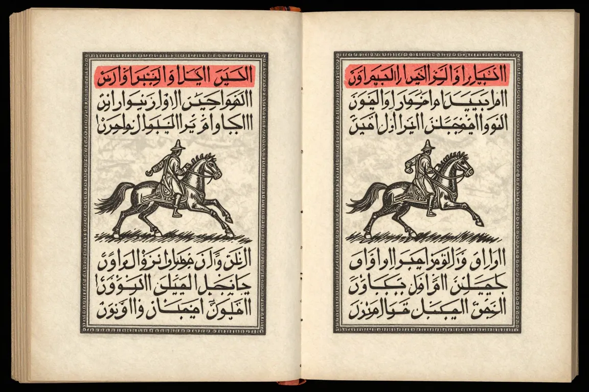

A book printed from stone. A scribe wrote each page in nastaliq with greasy ink, and the press copied the page as it was. The book looks like a manuscript, with a frame of ruled lines and small painted pictures.

Core thesis
A printed book can keep the hand of the scribe and the page of the manuscript, and still be cheap to copy.
Design principles
Write the page by hand in nastaliq on transfer paper; do not set type.
Draw each page inside a frame of ruled lines, with the text in two columns or at a slant.
Keep the manuscript layout: a decorated head piece, a title cartouche and a colophon.
Draw the pictures with a pen in the same ink, with fine line and no tone.
Print in one black ink; add red or a colour wash by hand, after printing.
Print on laid paper with a clear chain line.
Accept a soft edge on the line where the grease spread on the stone.